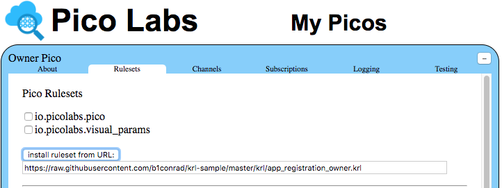
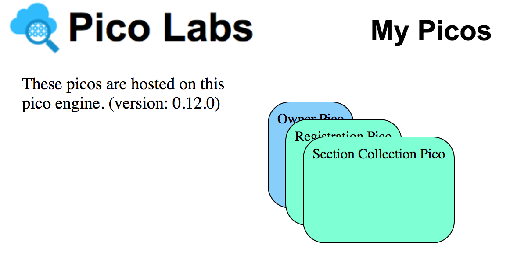

This is a proof of concept. How to create a collection of picos by installing one ruleset into the owner pico.
Picos are available for use by anyone. Download the pico engine and/or study the documentation at the Picolabs website (picolabs.io). Picolabs is an open source project, and your contributions and use are invited.
app_registration_owner.krl rulesetA pico application is a number of picos which work together to perform a particular task or operation. It seems to me that the application ought to be represented by a ruleset in the Owner Pico.
ruleset app_registration_owner {meta {use module io.picolabs.pico alias wranglershares __testing}global {__testing ={ "queries": [ { "name": "__testing" } ],"events": [ { "domain": "registration", "type": "channel_needed","attrs": [ "student_id" ] } ] }validRegPico = function(regPico){wrangler:children().filter(function(pico){pico.id == regPico.id}).length()}}
This ruleset is intended for installation in the Owner Pico.
This ruleset, and all of the others which make up this application,
depend on the io.picolabs.pico ruleset,
which is installed in all picos, including the Owner Pico.
Besides using that ruleset as a module (line 3), this ruleset
also expects and listens for two events that are raised by that ruleset,
pico:ruleset_added and
pico:child_initialized.
This ruleset is installed in the Owner Pico by the application owner, using the "My Picos" page, in the Owner Pico's "Rulesets" tab. The owner enters the URL of the raw source code of this ruleset into the box beside the button "install ruleset from URL", then clicks on that button.
We will now describe the series of events which unfold, resulting ultimately in the entire system of picos coming into existence, with their rulesets and relationships.
When the owner has entered the URL at which she has hosted the KRL
code of the application, she clicks on the "install ruleset from URL" button.
The "My Picos" page sends a pico:new_ruleset event to
the Owner Pico which includes the URL.
The Owner Pico has been listening for this event, and the rule
pico_new_ruleset will be selected and it will
have the pico engine fetch the app_registration_owner ruleset,
compile it, and install it in the Owner Pico.
Having done this, the rule will raise the
pico:ruleset_added event to the Owner Pico.
From the instant the ruleset had been added to the Owner Pico,
the Owner Pico began listening for the event,
and the following rule will be selected and will run as part of the
event sent by the "My Picos" page.
rule initialization {select when pico ruleset_added where rid == meta:ridpre {regPico = ent:reg_picoregBase = meta:rulesetURIregURL = "app_registration.krl"needRegPico = not regPico || not validRegPico(regPico)}if needRegPico thenengine:registerRuleset(regURL,regBase)fired {raise pico event "new_child_request"attributes { "dname": "Registration Pico","color": "#7FFFD4" }}}
Since the rule is freshly installed, it will not have a value for the
entity variable ent:reg_pico and so the rule will fire.
The action it will take (line 42) is to have the engine register the
ruleset that it will need in its first child.
Notice that the URL for the child's ruleset is "app_registration.krl",
which is a relative URL.
It is relative to the place-on-the-web from which this ruleset itself
was fetched by the engine.
The engine kept track of that location (an absolute URL) and provides
it to us as meta:rulesetURI.
Since the rule has fired, it will raise (lines 44-46) the event
pico:new_child_request for which the Owner Pico is
listening and which will be fielded by the pico_new_child_request
rule in the io.picolabs.pico ruleset.
That rule will result in the creation of a new child pico of the Owner Pico
(which will have a display name of "Registration Pico" (line 45)
and a particular color (line 46)),
and when that child pico is ready, it will send a
pico:child_initialized event,
for which the Owner Pico is listening,
and which will be fielded by the new_registration_pico rule in the
app_registration_owner ruleset.
rule new_registration_pico {select when pico child_initializedpre {regPico = event:attr("new_child")regRID = "app_registration"}event:send({ "eci": regPico.eci, "eid": "ruleset-install","domain": "pico", "type": "new_ruleset","attrs": { "rid": regRID } } )fired {ent:reg_pico := regPico}}
This rule will fire.
It's action is to send a pico:new_ruleset event to the
child pico, which will cause it to install the ruleset whose
ruleset identifier (RID) is "app_registration".
You may remember that this ruleset was registered with the engine
earlier (line 42).
Finally, in its postlude, this ruleset will set the entity variable
ent:reg_pico so that we can later access the child pico.
As an aside, we can now point out that the initialization
rule (lines 33-48) is idempotent because it will not fire,
even if the event is selects for was triggered again,
so long as the Owner Pico has a child matching ent:reg_pico.
app_registration ruleset
At this point, the Owner Pico has a new child pico,
named "Registration Pico", and this pico has the
app_registration ruleset installed in it.
ruleset app_registration {meta {shares __testinguse module io.picolabs.pico alias wrangler}global {__testing = { "queries": [ { "name": "__testing" } ],"events": [ { "domain": "section", "type": "needed","attrs": [ "student_id", "section_id" ] } ] }validScoPico = function(scoPico){wrangler:children().filter(function(pico){pico.id == scoPico.id}).length()}}
The story continues, because once this ruleset has been installed
in the Registration Pico,
it will receive the pico:ruleset_added event.
rule initialization {select when pico ruleset_added where rid == meta:ridpre {scoPico = ent:sco_picoscoBase = meta:rulesetURIscoURL = "app_section_collection.krl"needScoPico = not scoPico || not validScoPico(scoPico)}if needScoPico thenengine:registerRuleset(scoURL,scoBase)fired {raise pico event "new_child_request"attributes { "dname": "Section Collection Pico","color": "#7FFFD4" }}}
Following the pattern we have seen before, this rule will fire.
It will (in line 48) ask the engine to register another ruleset,
whose KRL code is at "app_section_collection.krl",
once again relative to the original base URL.
It will also request the creation of a child pico (lines 50-52),
named "Section Collection Pico".
When the child pico is ready, it will send the Registration Pico the
pico:child_initialized event, for which we are prepared
with the new_section_collection_pico rule.
rule new_section_collection_pico {select when pico child_initializedpre {scoPico = event:attr("new_child")scoRID = "app_section_collection"}event:send({ "eci": scoPico.eci, "eid": "ruleset-install","domain": "pico", "type": "new_ruleset","attrs": { "rid": scoRID } } )fired {ent:sco_pico := scoPico}}
This rule will fire. It's action is to sent a pico:new_ruleset
event to the child pico,
which will cause it to install the app_section_collection
ruleset.
Finally, in its postlude, it will set the entity variable
ent:sco_pico to keep track of its child pico.
app_section_collection ruleset
At this point, the Registration Pico has a new child pico,
in which is installed the app_section_collection ruleset.
ruleset app_section_collection {meta {use module io.picolabs.pico alias wranglershares sections, showChildren, __testing}global {sections = function() {ent:sections.defaultsTo({})}
The new child pico, SectionCollectionPico, will receive the
pico:ruleset_added event,
which will cause its initialization rule to fire.
rule initialization {select when pico ruleset_added where rid == meta:ridpre {secBase = meta:rulesetURIsecURL = "app_section.krl"}engine:registerRuleset(secURL,secBase)always {ent:sections := {}}}
Its action (line 194) will have the engine register a fourth ruleset,
whose URL is "app_section.krl" (relative to the original base URL).
In its postlude, it will initialize ent:sections
to an empty map.
Since this ruleset doesn't call for the creation of another child pico (yet), this cascade of pico creation is complete, and we will have three picos including the Owner Pico.
 © CC-BY Bruce Conrad May 26, 2017